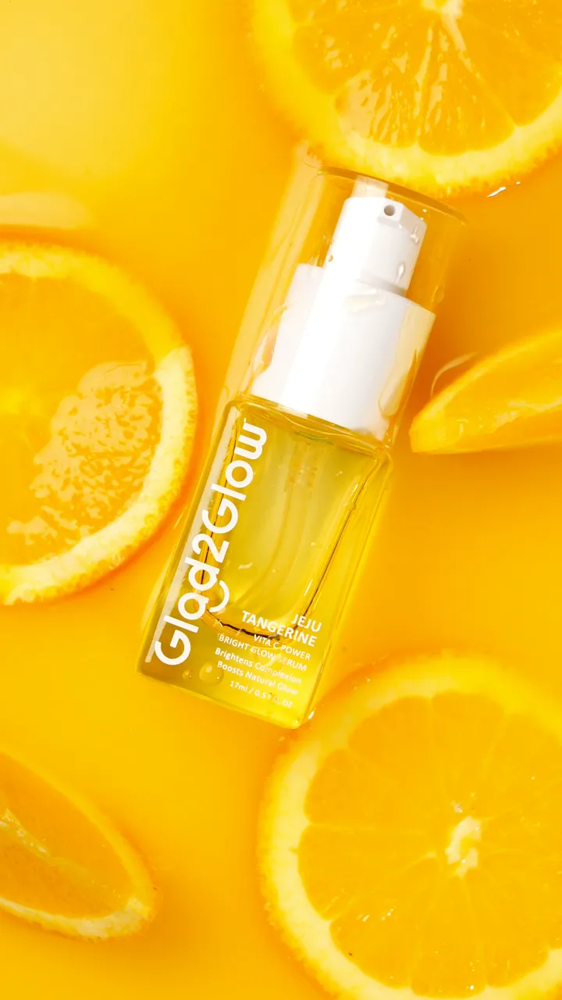
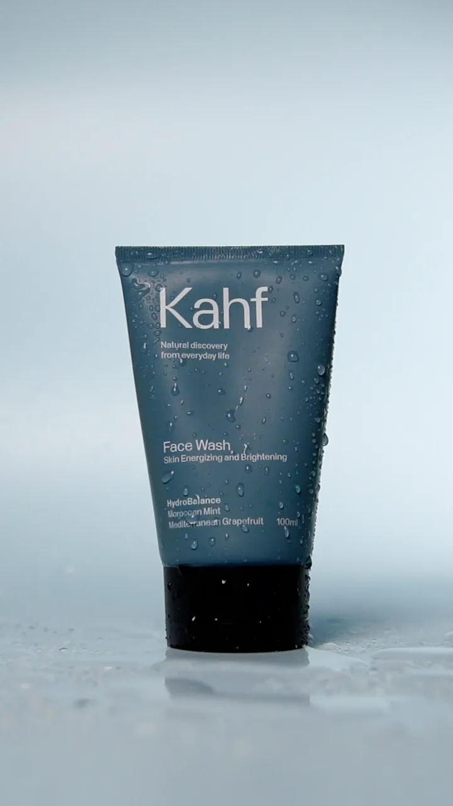

代表取締役
橋本 圭司
大手通信会社の営業、事業企画、およびWebコンサル会社での経験を生かし、様々な業種・規模の企業でBizDev・マーケティングのコンサルとして事業を推進。
会社紹介・サービス紹介・採用・SNSなどの実写動画を、事業理解に基づく企画から撮影・編集までワンストップで制作します。

Problem
企画から撮影・編集まで、まとめて任せられる制作先がない
撮影はできても、事業や顧客に合った企画にならない
動画で何をどう伝えればよいか、社内で決めきれていない
About
私たちは、事業理解に基づく企画から、撮影・編集までを一貫して手がける動画制作チームです。顧客・競合・自社の視点で伝えるべきことを整理し、専任チームと自社スタジオで、ブランドの世界観に沿った実写動画を制作します。
クリエイティブスタジオ
専門的な市場調査
Strength
顧客・競合・自社の3つの視点で事業を整理し、誰に何を伝える動画かを決めてから企画します。戦略から実行まで伴走する「Strategy2Action」の進め方を、動画の企画にも生かしています。
社内クリエイティブチームが、企画から撮影・編集・仕上げまで一貫して対応します。ブランドの世界観を反映した、質の高い実写動画を制作します。


撮影は、ご指定の場所に出張して行います。最短翌日から対応します（交通費・宿泊費は実費）。
Work Flow
ヒアリングと企画から、撮影・編集、納品まで、社内チームが一貫して対応します。
1
事業や顧客、動画の用途をお伺いし、伝える内容と構成を企画します。
2
ご指定の場所に出張して撮影します。最短翌日から対応します。
3
撮影した素材を、用途に合った長さと形式に編集します。
4
ご確認いただいた内容を反映し、完成した動画を納品します。
Member
事業づくりとマーケティングの経験を持つ代表と、映像ディレクターの経験を持つメンバーが、企画から撮影・編集まで担当します。
代表取締役
大手通信会社の営業、事業企画、およびWebコンサル会社での経験を生かし、様々な業種・規模の企業でBizDev・マーケティングのコンサルとして事業を推進。

映像ディレクター
東京生まれ、イギリス・シンガポール育ち。
映像ディレクターの経験を生かし、動画制作の企画・撮影・編集を担当。